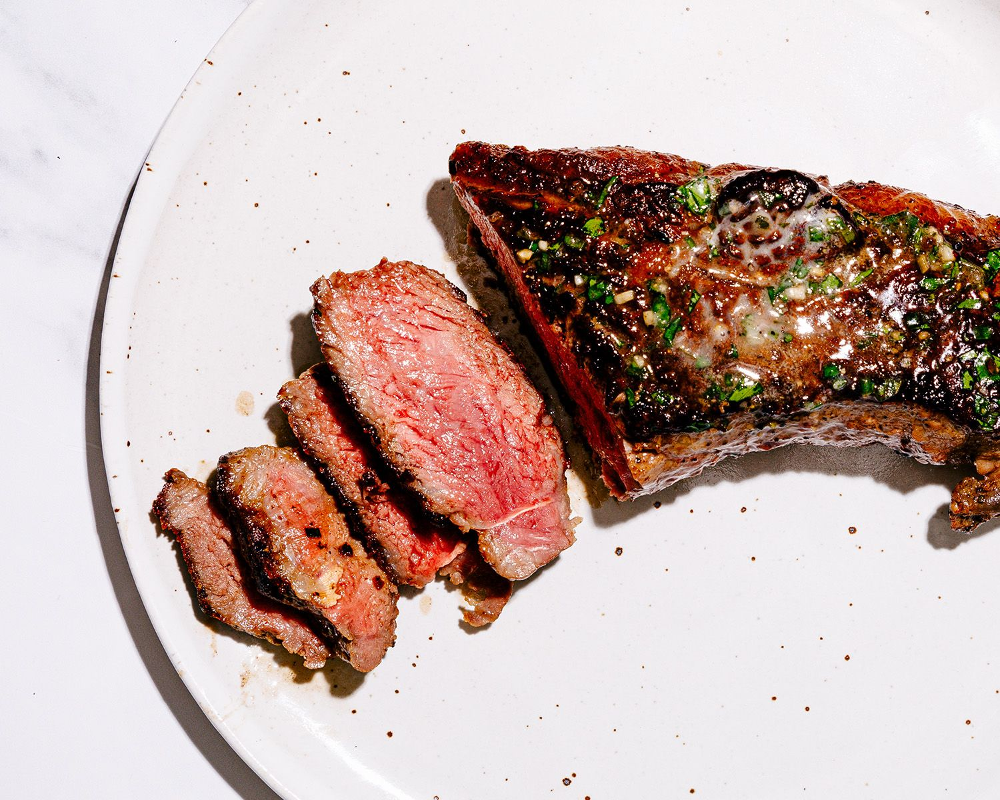

Home
Steak Recipe
Im going to share my technique for butter basting steak, with a few key
principles that will have you searing like a boss in no time.

Ingredients
- 1 Thick ribeye steak
- Kosher salt
- 3-4 tablespoons quality salted butter
- 2 springs of fresh rosemary
- 2 springs of fresh thyme
- 3-4 peeled whole garlic cloves